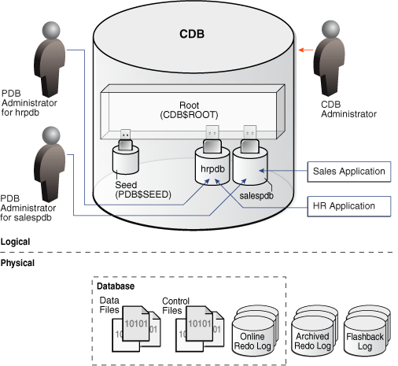
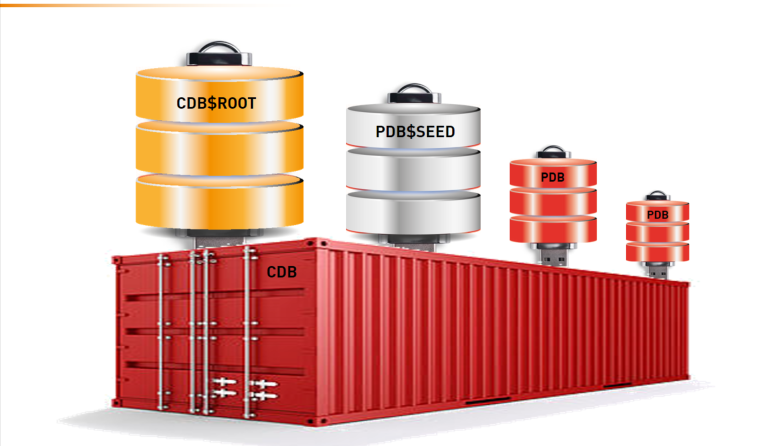
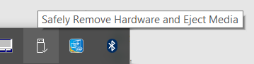
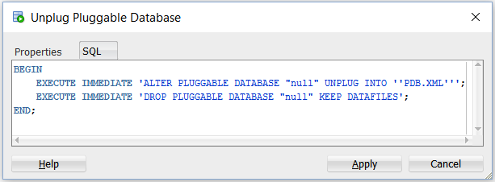

By Franck Pachot
.
When Oracle Multitenant came out in 12c, with pluggable databases, it was easy to draw them as USB sticks that you can plug and unplug to/from your Container Database (CDB). I don’t like this because it gives the false idea that an unplugged database is detached from the container.
Containers
In the Oracle documentation, the Concept book, the description of the multitenant architecture starts with an illustration of a CDB.

where the text description starts like:This graphic depicts a CDB as a cylinder. Inside the CDB is a box labeled “Root (CDB$ROOT).” Plugged into the box is the Seed (CDB$SEED), hrpdb, and salespdb.
Let me list what I don’t like with this description:
- There are 5 containers here but 3 ways to draw them. The CDB itself is a container (CDB_ID=0) and is a cylinder. The CDB$ROOT (CON_ID=1) is a container and is a box. The PDB$SEED, and the user PDBs are cylinders with USB plug.
- The CDB$ROOT do not look like a database (cylinder). However, physically it’s the same: SYSTEM, SYSAUX, UNDO, TEMP tablepsaces
- The PDB$SEED (CON_ID=1) looks like it is pluggable (USB stick) but you never unplug the PDB$SEED
- The USB plug is plugged inside the CDB$ROOT. That’s wrong. All containers inside a CDB are at the same level and are ‘plugged’ in the CDB (CON_ID=0) and not the CDB$ROOT(CON_ID=1). They are contained by the CDB and if they are plugged somewhere, it’s in the CDB controlfile. The root is a root for metadata and object links, not for the whole PDBs.
If I had to show pluggable databases as USB sticks it would be like that: 
{kind=link}
Here CDB$ROOT is a container like the pluggable databases, except that you cannot unplug it. PDB$SEED is a pluggable database but that you don’t unplug. The CDB is a container but do not look like a database. It’s the controlfile and the instance, but there’s no datafiles directly attached to the CDB.
Unplugged
However with this illustration, we can think that an unplugged pluggable database is detached from the CDB, which is wrong.
SQL> show pdbs
CON_ID CON_NAME OPEN MODE RESTRICTED
---------- ------------------------------ ---------- ----------
2 PDB$SEED READ ONLY NO
4 PDB READ WRITE NO
SQL> alter pluggable database PDB close;
Pluggable database altered.
SQL> alter pluggable database PDB unplug into '/tmp/PDB.xml';
Pluggable database altered.
SQL> show pdbs
CON_ID CON_NAME OPEN MODE RESTRICTED
---------- ------------------------------ ---------- ----------
2 PDB$SEED READ ONLY NO
4 PDB MOUNTED
Here PDB is unplugged, but still pertains to the CDB.
The CDB controlfile still addresses all the PDB datafiles:
RMAN> report schema;
using target database control file instead of recovery catalog
Report of database schema for database with db_unique_name CDB
List of Permanent Datafiles
===========================
File Size(MB) Tablespace RB segs Datafile Name
---- -------- -------------------- ------- ------------------------
1 829 SYSTEM YES /u02/app/oracle/oradata/CDB/system01.dbf
3 1390 SYSAUX NO /u02/app/oracle/oradata/CDB/sysaux01.dbf
4 4771 UNDOTBS1 YES /u02/app/oracle/oradata/CDB/undotbs01.dbf
5 270 PDB$SEED:SYSTEM NO /u02/app/oracle/oradata/CDB/pdbseed/system01.dbf
6 2 USERS NO /u02/app/oracle/oradata/CDB/users01.dbf
7 540 PDB$SEED:SYSAUX NO /u02/app/oracle/oradata/CDB/pdbseed/sysaux01.dbf
12 280 PDB:SYSTEM NO /u02/app/oracle/oradata/CDB/3969397A986337DCE053B6CDC40AC61C/datafile/o1_mf_system_ctcxz29m_.dbf
13 570 PDB:SYSAUX NO /u02/app/oracle/oradata/CDB/3969397A986337DCE053B6CDC40AC61C/datafile/o1_mf_sysaux_ctcxz2bb_.dbf
The datafiles 12 and 13 are the ones from my unplugged PDB, still known and managed by the CDB.
Backup
An unplugged PDB has data, and data should have backups. Who is responsible for the unplugged PDB backups? It’s still the CDB:
RMAN> backup database;
...
channel ORA_DISK_1: starting full datafile backup set
channel ORA_DISK_1: specifying datafile(s) in backup set
input datafile file number=00013 name=/u02/app/oracle/oradata/CDB/3969397A986337DCE053B6CDC40AC61C/datafile/o1_mf_sysaux_ctcxz2bb_.dbf
input datafile file number=00012 name=/u02/app/oracle/oradata/CDB/3969397A986337DCE053B6CDC40AC61C/datafile/o1_mf_system_ctcxz29m_.dbf
...
The unplugged CDB is not detached at all and the CDB is still referencing its files and is responsible for them. This is very different from an unplugged USB stick which has no link anymore with the hosts it was plugged-in before.
Backup optimization
If you wonderwhether it’s good to backup an unplugged PDB with each CDB backup, don’t worry. RMAN knows that it is in a state where it cannot be modified (like read-only tablespaces) and do not backup it each time. Of course, you need to have BACKUP OPTIMIZATION is configured to ON:
RMAN> backup database;
Starting backup at 15-AUG-16
using channel ORA_DISK_1
skipping datafile 12; already backed up 2 time(s)
skipping datafile 13; already backed up 2 time(s)
channel ORA_DISK_1: starting full datafile backup set
channel ORA_DISK_1: specifying datafile(s) in backup setUnplug and DROP
From what we have seen, an unplugged PDB is like a closed PDB. There’s a difference through: an unplugged PDB is closed forever. You cannot open it again:
SQL> show pdbs
CON_ID CON_NAME OPEN MODE RESTRICTED
---------- ------------------------------ ---------- ----------
2 PDB$SEED READ ONLY NO
4 PDB MOUNTED
SQL> alter pluggable database PDB open;
alter pluggable database PDB open
*
ERROR at line 1:
ORA-65086: cannot open/close the pluggable database
SQL> host oerr ora 65086
65086, 00000, "cannot open/close the pluggable database"
// *Cause: The pluggable database has been unplugged.
// *Action: The pluggable database can only be dropped.
So, if you want to keep the USB stick analogy, unplugged do not mean ‘physically unplugged’ but something like what you should do before removing a USB stick: 
{kind=link}
In summary:
ALTER PLUGGABLE DATABASE … UNPLUG is like the logical ‘eject’ you do to be sure that what you will remove physically was closed forever.
ALTER PLUGGABLE DATABASE … DROP … KEEP DATAFILES is the physical removal from the CDB
Because DROP is the only thing that can be done on an unplugged PDB, SQL Developer do the both when you click on ‘unplug’: 
{kind=link}
The idea to drop it just after the unplug is probably there to prevent the risk to drop it ‘including datafiles’ after it has been plugged into another CDB. Because then it is lost.
However, keep in mind that when unplugged and dropped, nobody will backup the PDB datafiles until it is plugged into a new CDB.
Read-Only
There’s a last one more difference. A USB stick can be read-only. A plugged PDB cannot. You may want to share a database from a read-only filesystem, like you can do with transportable tablespaces. but you can’t:
SQL> drop pluggable database PDB keep datafiles;
Pluggable database dropped.
SQL> create pluggable database PDB using '/tmp/PDB.xml';
Pluggable database created.
SQL> alter pluggable database PDB open read only;
alter pluggable database PDB open read only
*
ERROR at line 1:
ORA-65085: cannot open pluggable database in read-only mode
The plugged PDB must be opened in read/write mode at least once:
SQL> host oerr ora 65085
65085, 00000, "cannot open pluggable database in read-only mode"
// *Cause: The pluggable database has been created and not opened.
// *Action: The pluggable database needs to be opened in read/write or
// restricted mode first.And only then, it can be opened read-only:
SQL> alter pluggable database PDB open;
Pluggable database altered.
SQL> alter pluggable database PDB close;
Pluggable database altered.
SQL> alter pluggable database PDB open read only;
Pluggable database altered.
So what…
Here is the way I visualize pluggable databases:

Just a bunch of tablespaces, referenced by the CDB controlfile and grouped by self-contained containers. CDB$ROOT cannot be cloned nor unplugged. PDB$SEED can be cloned but not unplugged (but it’s a PDB). Other PDBs can be cloned and unplugged.
I’ll talk about multitenant at Oracle Open World, DOAG Conference and UKOUG TECH16.
There’s also a book coming, probably early 2017 (depends on 12.2 availability)